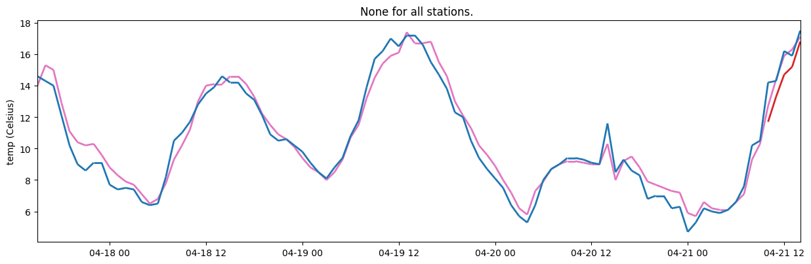

Working with irregular timestamps#
Some datasets have irregular time frequencies of the observations. These datasets come with some extra challenges. Here is some information on how to deal with them.
A common problem that can arise is that most observations are not present and that a lot of missing observations (and gaps) are introduced. This is because the toolkit assumes that each station has observations at a constant frequency. So the toolkit expects perfectly regular timestamp series. The toolkit will hence ignore observations that are not on the frequency, so observations get lost. Also, it looks for observations on perfectly regular time intervals, so when a timestamp is not present, it is assumed to be missing.
To avoid these problems you can synchronize your observations. Synchronizing will convert your irregular dataset to a regular dataset and an easy origin is chosen if possible. (The origin is the first timestamp of your dataset.) Converting your dataset to a regular dataset is performed by shifting the timestamp of an observation. For example, if a frequency of 5 minutes is assumed and the observation has a timestamp at 54 minutes and 47 seconds, the timestamp is shifted to 55 minutes. A certain maximal threshold needs to be set to avoid observations being shifted too much. This threshold is called the tolerance and it indicates what the maximal time-translation error can be for one observation timestamp.
Synchronizing your observations can be performed with he :py:meth:sync_observations()<metobs_toolkit.dataset.Dataset.sync_observations> method. As an argument of this function you must provide a tolerance.
Example#
In this example, we use a small dataset with three stations that have irregular and unsynchronized timestamps. The dataset can be found in here and the template file can be found here.
[1]:
import pandas as pd
datafile = 'https://raw.githubusercontent.com/vergauwenthomas/MetObs_toolkit/master/tests/test_data/wide_test_data.csv'
templatefile = 'https://raw.githubusercontent.com/vergauwenthomas/MetObs_toolkit/master/tests/test_data/wide_test_template.json'
# As an example, here is how the data looks like
df =pd.read_csv(datafile)
df
[1]:
| Tijd | MolenhofWeer - Temperatuur (°C) | QuattroCoronati - Temperatuur (°C) | Vlinder 02 Gent - Temperatuur (°C) | |
|---|---|---|---|---|
| 0 | 2023-04-17 16:58:40 | 14.0 | NaN | NaN |
| 1 | 2023-04-17 16:59:01 | NaN | 14.6 | NaN |
| 2 | 2023-04-17 17:57:41 | NaN | 14.3 | NaN |
| 3 | 2023-04-17 17:57:54 | 15.3 | NaN | NaN |
| 4 | 2023-04-17 18:56:31 | NaN | 14.0 | NaN |
| ... | ... | ... | ... | ... |
| 194 | 2023-04-21 15:57:04 | NaN | 17.5 | NaN |
| 195 | 2023-04-21 15:58:47 | 17.1 | NaN | NaN |
| 196 | 2023-04-21 16:06:00 | NaN | NaN | 16.5 |
| 197 | 2023-04-21 16:07:44 | NaN | 17.2 | NaN |
| 198 | 2023-04-21 16:09:33 | 17.3 | NaN | NaN |
199 rows × 4 columns
It can clearly be seen that timestamps are not synchronized over the stations and that the time resolution is not perfect for the stations. We can fix these timestamps in the toolkit when we import the datafile.
When a datafile is imported, the toolkit will convert the time series to “perfect” timestamps (= equally spaced timestamps). To do this, the toolkit must make an estimate of the frequency (=time resolution) for each station. In addition, the toolkit will estimate an origin and a last timestamp for each station. Once these three parameters (freq, origin, and last timestamp) are computed, a perfect time series is created. At last, the toolkit will map the records in the datafile to these perfect timestamps.
When the timestamps in the datafile are irregular, we can fix them by specifying tolerances and simplifications for mapping to perfect timestamps when importing the data from file: Dataset.import_data_from_file()
[2]:
import metobs_toolkit
dataset = metobs_toolkit.Dataset()
dataset.update_file_paths(
input_data_file=datafile,
template_file=templatefile)
dataset.import_data_from_file(
freq_estimation_method="highest", #highest or median
freq_estimation_simplify_tolerance="2min", #Try to simplify the frequency, the maximum simplification tolerance is 2 minutes
origin_simplify_tolerance="5min", #try to simplify the origin, the maximum simplification tolerance is 5 minutes
timestamp_tolerance="4min", #The maximum tolerance for mapping records to perfect timestamps is 5 minutes
templatefile_is_url=True)
The following data columns are renamed because of special meaning by the toolkit: {}
/home/thoverga/Documents/VLINDER_github/MetObs_toolkit/metobs_toolkit/df_helpers.py:54: FutureWarning: <class 'geopandas.array.GeometryArray'>._reduce will require a `keepdims` parameter in the future
return pd.concat([df.dropna(axis=1, how="all") for df in df_list], **kwargs)
/home/thoverga/Documents/VLINDER_github/MetObs_toolkit/metobs_toolkit/datasetbase.py:811: FutureWarning: The behavior of DataFrame concatenation with empty or all-NA entries is deprecated. In a future version, this will no longer exclude empty or all-NA columns when determining the result dtypes. To retain the old behavior, exclude the relevant entries before the concat operation.
df = pd.concat([df, self.outliersdf])
/home/thoverga/Documents/VLINDER_github/MetObs_toolkit/metobs_toolkit/datasetbase.py:821: FutureWarning: Setting an Index with object dtype into a DataFrame will stop inferring another dtype in a future version. Cast the Index explicitly before setting it into the DataFrame.
df["obs_datetime"] = df.index.get_level_values("datetime")
The freqency, origin and latest timestamp are stored per station in the Dataset.metadf in the dataset_resolution, dt_start and dt_end columns:
[3]:
dataset.metadf
[3]:
| lat | lon | geometry | dataset_resolution | dt_start | dt_end | |
|---|---|---|---|---|---|---|
| name | ||||||
| MolenhofWeer - Temperatuur (°C) | NaN | NaN | NaN | 0 days 00:01:00 | 2023-04-17 17:00:00+02:00 | 2023-04-21 16:09:00+02:00 |
| QuattroCoronati - Temperatuur (°C) | NaN | NaN | NaN | 0 days 00:01:00 | 2023-04-17 17:00:00+02:00 | 2023-04-21 16:09:00+02:00 |
| Vlinder 02 Gent - Temperatuur (°C) | NaN | NaN | NaN | 0 days 00:01:00 | 2023-04-17 17:00:00+02:00 | 2023-04-21 16:09:00+02:00 |
Because of the wide-structured data, the toolkit assumes a 1-minute-frequency. What we can do is to coarsen the time resolution to hourly.
Note: to avoid propagation of errors and tolerances, it is best to shift timestamps only once. For this example, this can be done by importing the data without simplifications or tolerances and coarsening it with tolerances.
Note: In this wide datafile example, the toolkit interprets the timestamps without a value as gaps, and is the assumption of 1-minute-frequency the correct one. This issue is typically related to wide-structured-datasets.
[4]:
import datetime
#import without simlifications and tolerances (to avoid error propagation/cumulation)
dataset.import_data_from_file(
freq_estimation_method="highest", #highest or median
freq_estimation_simplify_tolerance="0min", #Try to simplify the frequency, the maximum simplification tolerance is 2 minutes
origin_simplify_tolerance="0min", #try to simplify the origin, the maximum simplification tolerance is 5 minutes
timestamp_tolerance="0min", #The maximum tolerance for mapping records to perfect timestamps is 5 minutes
templatefile_is_url=True)
dataset.sync_records(
timestamp_shift_tolerance="6min",
freq_shift_tolerance="0min",
fixed_origin=None,
fixed_enddt=None,
fixed_freq='1h',
direction="nearest",)
dataset.make_plot()
The following data columns are renamed because of special meaning by the toolkit: {}
/home/thoverga/Documents/VLINDER_github/MetObs_toolkit/metobs_toolkit/df_helpers.py:54: FutureWarning: <class 'geopandas.array.GeometryArray'>._reduce will require a `keepdims` parameter in the future
return pd.concat([df.dropna(axis=1, how="all") for df in df_list], **kwargs)
[4]:
<Axes: title={'center': 'None for all stations. '}, ylabel='temp (Celsius)'>

We can see that the timestamps in the Dataset are “perfect”, and that the stations are syncronized.
[5]:
dataset.get_full_status_df()['temp']['value'].unstack().transpose()
[5]:
| name | MolenhofWeer - Temperatuur (°C) | QuattroCoronati - Temperatuur (°C) | Vlinder 02 Gent - Temperatuur (°C) |
|---|---|---|---|
| datetime | |||
| 2023-04-17 17:00:00+02:00 | 14.0 | 14.6 | NaN |
| 2023-04-17 18:00:00+02:00 | 15.3 | 14.3 | NaN |
| 2023-04-17 19:00:00+02:00 | 15.0 | 14.0 | NaN |
| 2023-04-17 20:00:00+02:00 | 12.9 | 12.1 | NaN |
| 2023-04-17 21:00:00+02:00 | 11.1 | 10.2 | NaN |
| ... | ... | ... | ... |
| 2023-04-21 12:00:00+02:00 | 12.7 | 14.2 | 11.7 |
| 2023-04-21 13:00:00+02:00 | 14.4 | 14.3 | 13.3 |
| 2023-04-21 14:00:00+02:00 | 15.9 | 16.2 | 14.7 |
| 2023-04-21 15:00:00+02:00 | 16.3 | 15.9 | 15.2 |
| 2023-04-21 16:00:00+02:00 | 17.1 | 17.5 | 16.8 |
96 rows × 3 columns